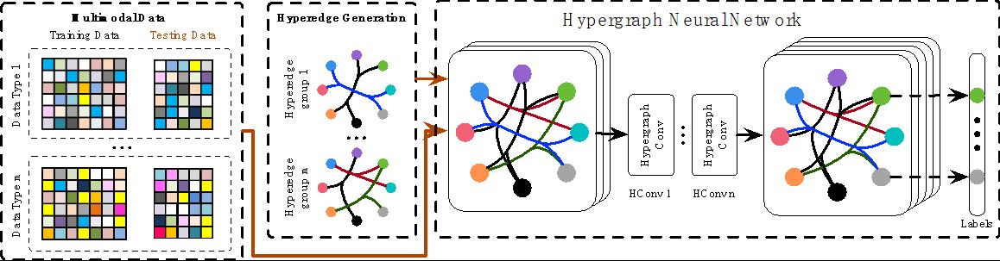

Machine Learning¶
Complex data correlation modelling and representation plays an important role in many applications, such as social media analysis, data classification and medical diagnosis. Here, we focus on graph/hypergraph based learning, hypergraph neural networks, multi-modal data fusion, metric learning and cost-sensitive learning methods, and their applications on visual classification, software defect prediction, and social media data filtering and recommendation.
Graph/Hypergraph Learning¶
The hypergraph is a generalization of a graph, which is composed of a vertex set and a hyperedge set. In a hypergraph, each hyperedge can connect any number of vertices, and the hyperedge can be easily expanded, which leads to a flexible edge degree for hypergraph. Therefore, the hypergraph model is able to formulate the high-order correlation of data compared with the simple graph and other linear comparison methods. Due to this advantage, hypergraph learning method has attracted much attention in recent years and has been applied in many tasks, such as image retrieval, object classification, image segmentation, multimedia recommendation and visual tracking.
3-D Object Retrieval and Recognition With Hypergraph Analysis¶
In our work, we propose a hypergraph analysis approach for 3-D object retrieval and recognition. In particular, we construct multiple hypergraphs for a set of 3-D objects based on their 2-D views. Therefore, our method can explore the higher order relationship among objects and does not use the distance between objects. We conduct experiments on the National Taiwan University 3-D model dataset and the ETH 3-D object collection. Experimental results demonstrate the effectiveness of the proposed method by comparing with the state-of-the-art methods.
Visual-Textual Joint Relevance Learning for Tag-Based Social Image Search¶
Due to the popularity of social media websites, extensive research efforts have been dedicated to tag-based social image search. In our work, we propose an approach that simultaneously utilizes both visual and textual information to estimate the relevance of user tagged images. The relevance estimation is determined with a hypergraph learning approach. Comparative results of the experiments conducted on a dataset including 370+ images are presented, which demonstrate the effectiveness of the proposed approach.
Dynamic Hypergraph¶
In all existing works, the performance of hypergraph learning highly depends on the generated hypergraph structure. In our work, we propose the first dynamic hypergraph structure learning method. Given the originally generated hypergraph structure, the objective of our work is to simultaneously optimize the label projection matrix (the common task in hypergraph learning) and the hypergraph structure itself. We have applied the proposed method in the tasks of 3D shape recognition and gesture recognition. Experimental results on four public datasets show better performance compared with the state-of-the-art methods.
Hypergraph Structure With Tensor¶
In our work, we introduce tensor to represent the hypergraph structure, which is more flexible and easier for optimization than the incidence matrix. Furthermore, we propose a dynamic hypergrpah learning method to jointly optimize the label projection matrix and the hypergraph structure based on the tensor representation. Experimental results on four public benchmarks substantiate the superiority of the proposed method over the state-of-the-art methods and traditional hypergraph learning.
Cross Diffusion¶
In our work, we aim to conduct 3D object recognition using multi-modal information through a cross diffusion process on multi-hypergraph structure. Given multi-modal representations of 3D objects, the correlation among these objects is formulated using the multi-hypergraph structure. We propose a cross diffusion process on multi-hypergraph, in which the label information is propagated from multiple hypergraphs alternatively. We have applied the proposed method in 3D object recognition using multiple representations. Experimental results demonstrate that the proposed method can achieve satisfied multi-modal combination performance and outperform the current state-of-the-art methods.
Hypergraph Neural Networks¶
In this paper, we present a hypergraph neural networks (HGNN) framework for data representation learning, which can encode high-order data correlation in a hypergraph structure. Confronting the challenges of learning representation for complex data in real practice, we propose to incorporate such data structure in a hypergraph, which is more flexible on data modeling, especially when dealing with complex data. In this method, a hyperedge convolution operation is designed to handle the data correlation during representation learning. In this way, traditional hypergraph learning procedure can be conducted using hyperedge convolution operations efficiently. HGNN is able to learn the hidden layer representation considering the high-order data structure, which is a general framework considering the complex data correlations. We have conducted experiments on citation network classification and visual object recognition tasks and compared HGNN with graph convolutional networks and other traditional methods. Experimental results demonstrate that the proposed HGNN method outperforms recent state-of-the-art methods. We can also reveal from the results that the proposed HGNN is superior when dealing with multi-modal data compared with existing methods.
Metric Learning¶
Earth Mover’s Distance (EMD)¶
Earth Mover’s Distance (EMD), targeting at measuring the many-to-many distances, has shown its superiority and been widely applied in computer vision tasks. However, there is still little effort concentrated on optimizing the EMD metric towards better matching performance. To tackle this issue, we propose an EMD metric learning algorithm in this work. This method is able to generate a discriminative ground distance matrix which can further improve the EMD distance measurement. We then apply our EMD metric learning method on two tasks, i.e., multiview object classification and document classification. The experimental results have shown better performance of our proposed EMD metric learning method compared with the traditional EMD method and the state-of-the-art methods. It is noted that the proposed EMD metric learning method can be also used in other applications.
Kullback-Leibler divergence (KLD)¶
Kullback-Leibler divergence (KLD), which is widely used to measure the similarity between two distributions, plays an important role in machine learning. However, in practice, the conventional KLD may not always obtain a satisfying performance on measuring the similarity between two distributions because the current observed distributions may not be the best representation for the data. To address this problem, we propose a KLD metric learning algorithm, which aims at learning a best linear mapping and obtaining the best KLD to well express the similarity of data distributions by optimizing such linear mapping. Such learned KLD metric achieves better performance on measuring the difference between distributions, i.e., makes the data distributions easier to classify. Also, we develop an intrinsic steepest descent method, which preserves the manifold structure of the metric in the iteration to solve this optimization task.